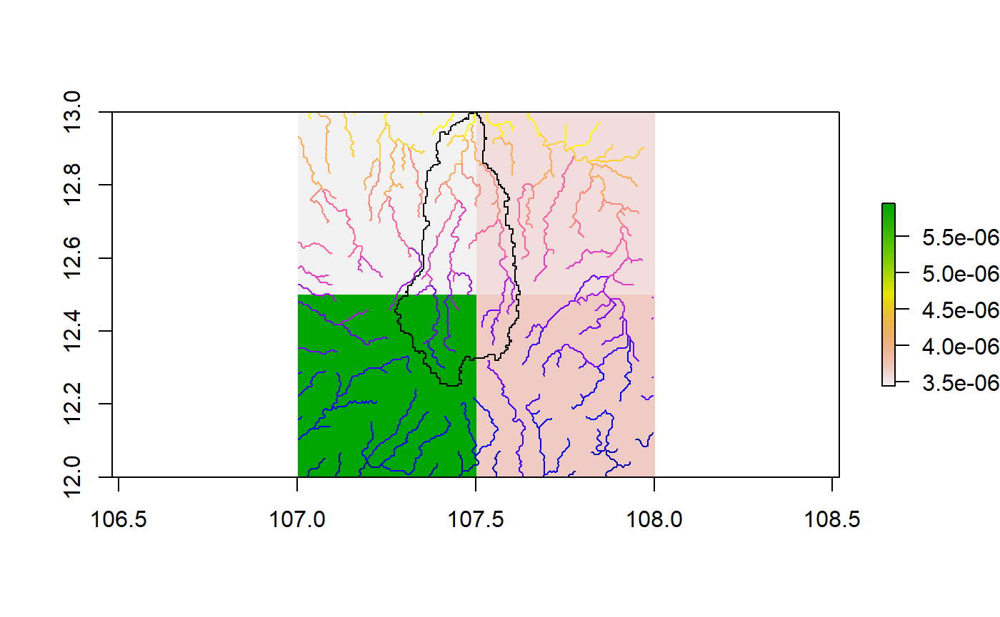
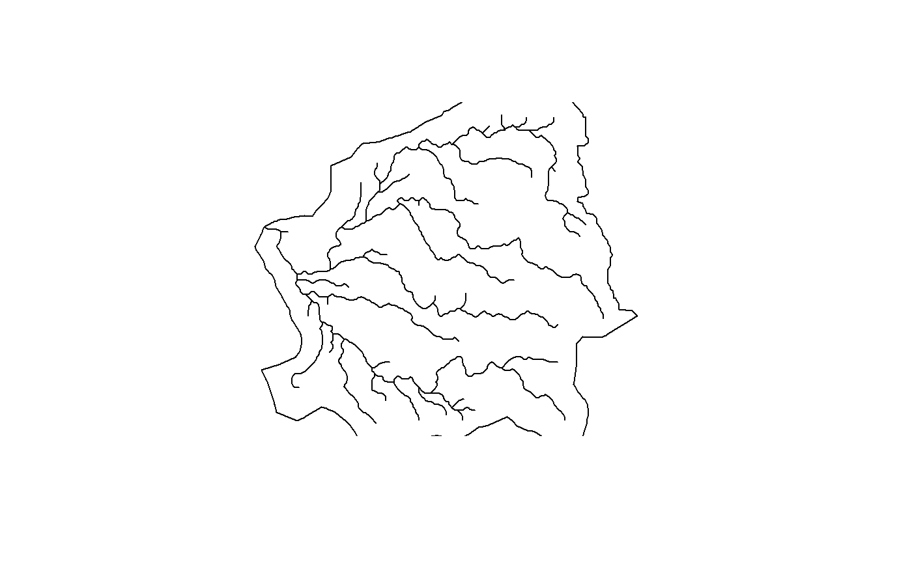
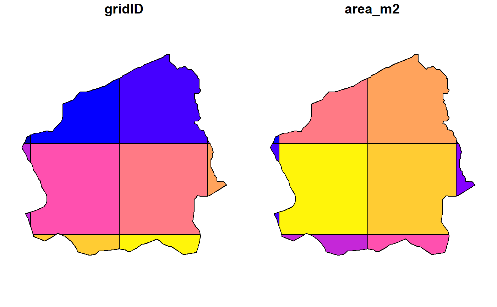
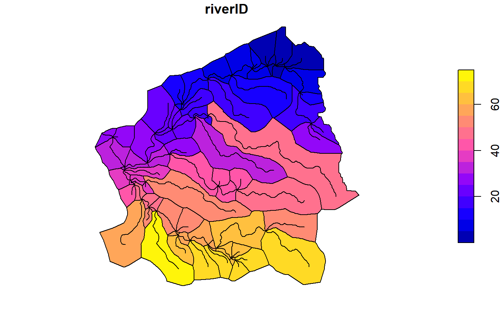
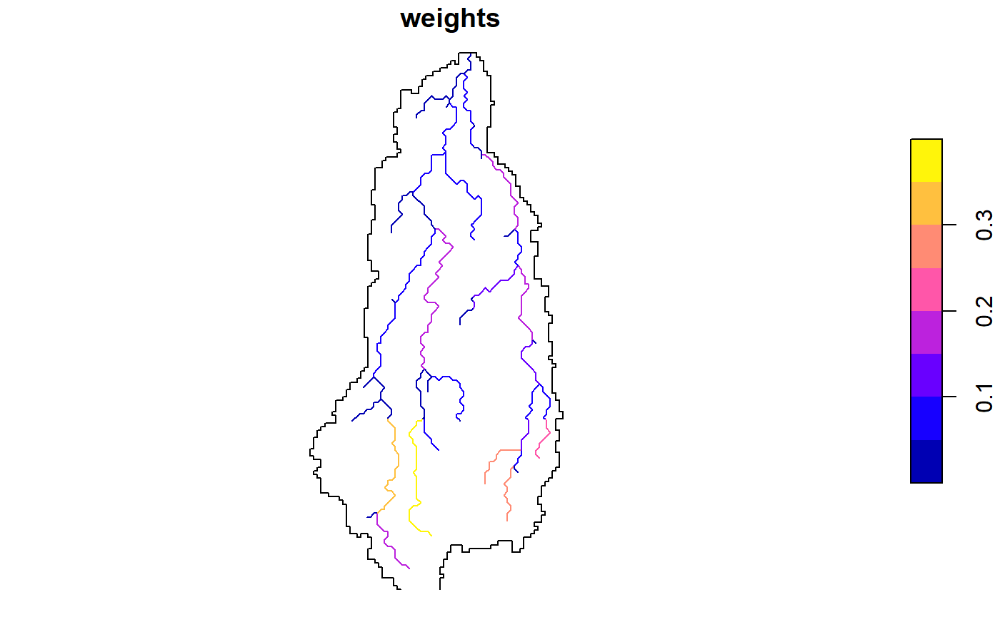
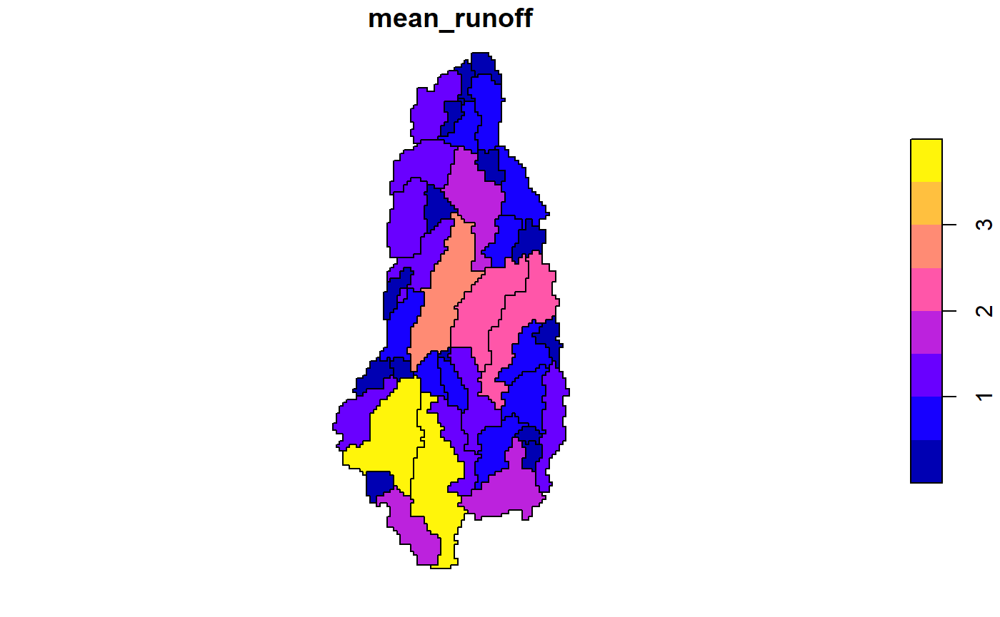

hydrostreamer_simple_tutorial.RmdThe development of ‘hydrostreamer’ was inspired by a study, where one component was estimating water availability in rural villages. In that study, water availability was estimated using a regional distributed hydrological model with 5km grid size. The problem in the study was how it represented the available water quantity at a village. First, the grid size was too coarse to represent the stream network accurately. A regional model with 5km grid size is quite fine, but for a village level estimates where distance to water source was an important attribute. Field representation (which raster in essence is) was not satisfactory.
Hence, hydrostreamer was conceived. hydrostreamer takes an off-the-shelf runoff product of an arbitrary resolution, and assigns runoff to an explicitly represented river network. To keep things simple and approachable, there is no runoff modelling involved in the use of hydrostreamer, rather, it post-processes results from either hydrological or land sufrace models and with minimal input requirements.
The concept of hydrostreamer is very simple and easy to grasp, with a design philosophy that it should be easy to use for anyone, without technical background. In fact it is nothing new: There are many solutions which use similar ideas (for instance HydroROUT, RAPID, or mizuRoute. These also take off-the-shelf runoff products, and apply river routing algorithms to predict streamflow at explicit (vector) river segments. What sets hydrostreamer apart from these solutions is that it is written in R, is easy to install, and . Also, hydrostreamer’s focus is not in river routing, but in the downscaling step.
Fictional example data is provided with the package for tutorial purposes. It contains a river network with 71 river segments, and runoff timeseries as GeoTIFF (12 layers; one for each month of the year). Included is also an area of interest (a basin). an AoI is not an absolute requirement, but it ensures that no erroneous assignments are done at the edges.
library(sf)
library(hydrostreamer)
library(raster)
library(lubridate)
library(rgdal)
library(dplyr)
data(river)
data(basin)
runoff <- brick(system.file("extdata", "runoff.tif", package = "hydrostreamer"))
plot(runoff[[1]])

hydrostreamer main workflow occurs in four steps (and four functions):
The raster layers are converted to polygons in order to do all the computations using only vector processing. Each cell of the raster is polygonized, and if an area of interest is provided, the polygons are clipped to it. This removes any unneeded grid cells. The resulting HSgrid object is a list of two components; “grid” contains the geometries of the areas, and “runoff” contains a list of tables with runoff output.
grid <- raster_to_HSgrid(runoff, date=ymd("1971-01-01"), timestep="month", aoi=basin)
names(grid)
#> [1] "grid" "runoff"
plot(grid)
grid$runoff
#> $runoff1
#> Date 1 2 3 4
#> 1 1971-01-01 2.325416e-05 1.085478e-05 2.066272e-06 6.228385e-06
#> 2 1971-02-01 2.317454e-05 3.976262e-06 3.286600e-07 2.106799e-06
#> 3 1971-03-01 2.310994e-05 2.956792e-06 2.584050e-07 2.320897e-06
#> 4 1971-04-01 2.373559e-05 6.345476e-06 5.972972e-07 6.933015e-06
#> 5 1971-05-01 2.633268e-05 1.567615e-05 6.144829e-06 2.037238e-05
#> 6 1971-06-01 3.023585e-05 2.778742e-05 1.548536e-05 3.365787e-05
#> 7 1971-07-01 3.575897e-05 3.935344e-05 3.080465e-05 4.553730e-05
#> 8 1971-08-01 5.544954e-05 5.770218e-05 6.382931e-05 7.320941e-05
#> 9 1971-09-01 4.987816e-05 7.133343e-05 8.171513e-05 8.925423e-05
#> 10 1971-10-01 3.280887e-05 7.046102e-05 7.650543e-05 8.514045e-05
#> 11 1971-11-01 2.502852e-05 5.033101e-05 4.411769e-05 5.360321e-05
#> 12 1971-12-01 2.314892e-05 2.832810e-05 1.566506e-05 2.296584e-05
#> 5 6 7 8 9
#> 1 2.935761e-05 1.964664e-05 1.161588e-05 1.518073e-06 2.349266e-05
#> 2 2.918972e-05 1.736031e-05 1.056904e-05 9.963273e-07 1.661220e-05
#> 3 2.903075e-05 1.570157e-05 9.912232e-06 1.004868e-06 1.210141e-05
#> 4 2.890713e-05 1.522052e-05 1.346691e-05 3.907026e-06 9.120746e-06
#> 5 3.169321e-05 1.661150e-05 1.968873e-05 1.668169e-05 1.077580e-05
#> 6 3.899269e-05 1.729960e-05 1.789127e-05 2.954771e-05 1.657535e-05
#> 7 6.930622e-05 1.844853e-05 1.764659e-05 3.577900e-05 3.934050e-05
#> 8 9.721468e-05 3.095783e-05 1.979133e-05 5.700298e-05 7.896873e-05
#> 9 7.482942e-05 3.450980e-05 2.049743e-05 7.456652e-05 8.057906e-05
#> 10 4.042427e-05 3.298572e-05 2.602865e-05 7.231905e-05 6.682717e-05
#> 11 3.096831e-05 2.689101e-05 1.766887e-05 3.896730e-05 4.957518e-05
#> 12 2.940224e-05 2.276469e-05 1.258732e-05 1.110257e-05 3.487705e-05
#> 10
#> 1 8.157417e-06
#> 2 1.850369e-06
#> 3 1.382575e-06
#> 4 2.925848e-06
#> 5 1.052865e-05
#> 6 1.780026e-05
#> 7 2.439926e-05
#> 8 4.886566e-05
#> 9 6.860532e-05
#> 10 7.414891e-05
#> 11 4.971711e-05
#> 12 2.476046e-05Once the raster has been polygonized, we can compute the weights. compute_weights() provides a possibility to weight the segments by their respective drainage area, or by using river segment properties. If the catchment areas for each specific river segment are known, they can be provided. If not, hydrostreamer can estimate catchment areas using medial axis delineation (segment specific Voronoi diagram). Alternatively, if the river network is derived from a DEM, providing drainage direction raster allows hydrostreamer to delineate basins according to it.
In this example data, the river network is not delineated using a DEM, so we’ll use medial axis delineation (we compute a segment Voronoi diagram). The area of interest is important here as it is used to clip the Voronoi diagram.
voronoi <- river_voronoi(river, aoi=basin, riverID = "ID")
plot(voronoi[,"riverID"], reset=FALSE)
plot(st_geometry(river), add=TRUE)
Each river segment now has a specific drainage area associated with it, and these can be used to weight. Here the third argument “area” tells the function that we’re using area-based weighting, and basins is used to provide the computed segment-specific basins. Note that if basins were not provided, the function would automatically compute the Voronoi diagram.
v.weights <- compute_HSweights(river, grid, "area", aoi=basin, basins = voronoi, riverID = "ID")The output (object of class HSweights) is a list of 3 objects:
plot(v.weights[[2]][,"weights"])
If the river network is very large, creating the catchment areas may take considerable amount of time. Alternative is to simply use the river segments themselves, and their properties for weighting. There are some important things to consider here. Runoff is allocated to the river segments only where they intersect the grid cells. In our example, this means that grid ID 4 on the left edge of the area of interest is not considered, because no river line crosses to that grid cell (see below).

Currently, hydrostreamer offers four ways to weight the segments:
l.weights <- compute_HSweights(river, grid, "length", aoi=basin, riverID = "ID")The function works a little bit different with segment-based weighting. The river network is first split at grid cell boundaries (using function split_river_with_grid). The segments are then routed with flow_network, and finally weighted based on the property defined. The output (HSweights) is a list of 3 objects:
After weighting, we can apply the actual downscaling. The output is a list object with two components: “river” - a river network with routing information, and “downscaled”, downscaled runoff timeseries with one value for each river segment for each timestep.
v.runoff <- downscale_runoff(v.weights)
l.runoff <- downscale_runoff(l.weights)
names(v.runoff)
#> [1] "river" "downscaled"
v.runoff$downscaled[[1]]
#> Date 1 2 3 4 5
#> 1 1971-01-01 0.057340964 0.064393425 0.011245652 0.014300120 0.08860845
#> 2 1971-02-01 0.009120619 0.010242379 0.001788727 0.002274568 0.01409401
#> 3 1971-03-01 0.007170977 0.008052947 0.001406365 0.001788352 0.01108124
#> 4 1971-04-01 0.016575549 0.018614204 0.003250780 0.004133735 0.02561404
#> 5 1971-05-01 0.170524680 0.191497796 0.033443129 0.042526724 0.26351018
#> 6 1971-06-01 0.429733186 0.482586792 0.084278840 0.107170086 0.66406264
#> 7 1971-07-01 0.854857673 0.959998052 0.167653827 0.213190820 1.32100350
#> 8 1971-08-01 1.771322304 1.989180206 0.347389949 0.441745645 2.73720766
#> 9 1971-09-01 2.267670485 2.546575082 0.444733255 0.565528678 3.50420982
#> 10 1971-10-01 2.123096432 2.384219623 0.416379537 0.529473716 3.28080090
#> 11 1971-11-01 1.224306593 1.374886115 0.240109778 0.305326763 1.89190944
#> 12 1971-12-01 0.434719921 0.488186853 0.085256834 0.108413715 0.67176860
#> 6 7 8 9 10 11
#> 1 0.014324387 0.028113261 0.074780464 0.025842188 0.09006927 0.025583835
#> 2 0.002278428 0.004471678 0.011894535 0.004110443 0.01432636 0.004069349
#> 3 0.001791387 0.003515803 0.009351935 0.003231786 0.01126393 0.003199477
#> 4 0.004140750 0.008126699 0.021616784 0.007470200 0.02603632 0.007395518
#> 5 0.042598891 0.083605235 0.222387517 0.076851357 0.26785448 0.076083047
#> 6 0.107351951 0.210690582 0.560430879 0.193670373 0.67501056 0.191734184
#> 7 0.213552600 0.419121600 1.114851384 0.385263716 1.34278192 0.381412103
#> 8 0.442495278 0.868448001 2.310046671 0.798292200 2.78233399 0.790311402
#> 9 0.566488368 1.111798737 2.957352619 1.021984343 3.56198116 1.011767218
#> 10 0.530372221 1.040916635 2.768808270 0.956828307 3.33488906 0.947262569
#> 11 0.305844896 0.600255872 1.596663331 0.551765425 1.92309996 0.546249239
#> 12 0.108597691 0.213135489 0.566934263 0.195917773 0.68284355 0.193959117
#> 12 13 14 15 16 17
#> 1 0.19591485 0.27092333 0.34645039 0.020795882 0.25708354 0.11518726
#> 2 0.03116210 0.09924310 0.12690975 0.007617830 0.09417339 0.04219475
#> 3 0.02450082 0.07379826 0.09437148 0.005664702 0.07002837 0.03137648
#> 4 0.05663309 0.15837607 0.20252760 0.012156835 0.15028562 0.06733605
#> 5 0.58262565 0.39125950 0.50033347 0.030032802 0.37127249 0.16635005
#> 6 1.46825421 0.69354320 0.88688677 0.053235884 0.65811439 0.29487066
#> 7 2.92076203 0.98221839 1.25603783 0.075394387 0.93204296 0.41760540
#> 8 6.05201439 1.44018266 1.84167179 0.110547400 1.36661269 0.61231601
#> 9 7.74786970 1.78040366 2.27673841 0.136662522 1.68945391 0.75696625
#> 10 7.25390863 1.75862929 2.24889386 0.134991137 1.66879186 0.74770854
#> 11 4.18304512 1.25620647 1.60640735 0.096425517 1.19203469 0.53409568
#> 12 1.48529221 0.70703798 0.90414357 0.054271734 0.67091981 0.30060817
#> 18 19 20 21 22 23
#> 1 0.027532070 0.14659032 0.11250390 0.10206138 0.25822669 0.0005507501
#> 2 0.010085392 0.02331657 0.01789480 0.03738655 0.09459214 0.0003614630
#> 3 0.007499608 0.01833237 0.01406957 0.02780105 0.07033975 0.0003645615
#> 4 0.016094668 0.04237486 0.03252150 0.05966293 0.15095389 0.0014174512
#> 5 0.039761006 0.43594084 0.33457219 0.14739404 0.37292340 0.0060520402
#> 6 0.070480014 1.09859901 0.84314350 0.26126940 0.66104077 0.0107197771
#> 7 0.099816083 2.18541603 1.67724465 0.37001821 0.93618740 0.0129804597
#> 8 0.146355834 4.52832826 3.47536316 0.54254106 1.37268949 0.0206804245
#> 9 0.180930148 5.79722635 4.44920636 0.67070804 1.69696626 0.0270523945
#> 10 0.178717369 5.42762745 4.16554972 0.66250527 1.67621234 0.0262370224
#> 11 0.127659602 3.12990026 2.40210944 0.47323413 1.19733521 0.0141371601
#> 12 0.071851395 1.11134744 0.85292755 0.26635311 0.67390313 0.0040279605
#> 24 25 26 27 28 29
#> 1 0.6222479 0.012839271 0.03379070 0.06404412 0.004580278 0.4512722
#> 2 0.2279383 0.011345138 0.03359746 0.05659117 0.003006085 0.3987567
#> 3 0.1694975 0.010261135 0.03341449 0.05118401 0.003031852 0.3606563
#> 4 0.3637530 0.009946761 0.03327219 0.04961586 0.011788143 0.3496068
#> 5 0.8986322 0.010855778 0.03647898 0.05415017 0.050331411 0.3815567
#> 6 1.5929076 0.011305463 0.04488070 0.05639326 0.089150350 0.3973622
#> 7 2.2559274 0.012056300 0.07977167 0.06013855 0.107951174 0.4237525
#> 8 3.3077649 0.020231251 0.11189439 0.10091636 0.171987447 0.7110840
#> 9 4.0891735 0.022552498 0.08612889 0.11249508 0.224979533 0.7926707
#> 10 4.0391628 0.021556496 0.04652846 0.10752688 0.218198542 0.7576635
#> 11 2.8852144 0.017573543 0.03564462 0.08765934 0.117570801 0.6176714
#> 12 1.6239019 0.014876950 0.03384207 0.07420835 0.033498280 0.5228921
#> 30 31 32 33 34 35 36
#> 1 0.4493408 0.3484495 0.5669535 0.2869798 0.012349014 0.9117471 0.4418083
#> 2 0.3970501 0.3078997 0.5009760 0.2535833 0.010911933 0.8295794 0.3903942
#> 3 0.3591128 0.2784806 0.4531088 0.2293540 0.009869322 0.7780255 0.3530928
#> 4 0.3481105 0.2699486 0.4392267 0.2223272 0.009566951 1.0570372 0.3422750
#> 5 0.3799238 0.2946188 0.4793669 0.2426453 0.010441259 1.5453974 0.3735549
#> 6 0.3956616 0.3068229 0.4992240 0.2526965 0.010873773 1.4043119 0.3890289
#> 7 0.4219389 0.3272002 0.5323793 0.2694790 0.011595940 1.3851062 0.4148657
#> 8 0.7080407 0.5490630 0.8933668 0.4522032 0.019458736 1.5534502 0.6961715
#> 9 0.7892783 0.6120602 0.9958679 0.5040871 0.021691349 1.6088730 0.7760473
#> 10 0.7544208 0.5850294 0.9518867 0.4818247 0.020733379 2.0430267 0.7417741
#> 11 0.6150279 0.4769346 0.7760084 0.3927989 0.016902512 1.3868551 0.6047179
#> 12 0.5206542 0.4037508 0.6569329 0.3325254 0.014308886 0.9879970 0.5119263
#> 37 38 39 40 41 42
#> 1 0.3360638 0.11793860 0.01837776 0.09170725 0.08963913 1.2265849
#> 2 0.2969554 0.10421384 0.01623910 0.08103508 0.08156075 1.0838447
#> 3 0.2685819 0.09425643 0.01468749 0.07329236 0.07649219 0.9802857
#> 4 0.2603533 0.09136866 0.01423751 0.07104687 0.10392344 0.9502523
#> 5 0.2841465 0.09971869 0.01553865 0.07753972 0.15193696 1.0370942
#> 6 0.2959169 0.10384939 0.01618231 0.08075170 0.13806602 1.0800544
#> 7 0.3155698 0.11074641 0.01725704 0.08611471 0.13617780 1.1517847
#> 8 0.5295465 0.18583962 0.02895843 0.14450605 0.15272868 1.9327691
#> 9 0.5903044 0.20716207 0.03228099 0.16108605 0.15817761 2.1545268
#> 10 0.5642344 0.19801303 0.03085535 0.15397190 0.20086177 2.0593750
#> 11 0.4599819 0.16142653 0.02515426 0.12552280 0.13634974 1.6788681
#> 12 0.3893994 0.13665625 0.02129444 0.10626181 0.09713570 1.4212522
#> 43 44 45 46 47 48 49
#> 1 0.2267411 0.2963762 0.1779845 0.04430785 0.1443113 1.501725 0.1775575
#> 2 0.2063070 0.2618863 0.1619443 0.02907971 0.1275175 1.366388 0.1568947
#> 3 0.1934861 0.2368636 0.1518803 0.02932898 0.1153335 1.281474 0.1419038
#> 4 0.2628731 0.2296067 0.2063469 0.11403397 0.1118000 1.741030 0.1375562
#> 5 0.3843228 0.2505901 0.3016810 0.48688675 0.1220172 2.545401 0.1501273
#> 6 0.3492364 0.2609704 0.2741393 0.86240627 0.1270716 2.313021 0.1563461
#> 7 0.3444602 0.2783024 0.2703901 1.04427822 0.1355108 2.281388 0.1667296
#> 8 0.3863254 0.4670094 0.3032530 1.66374054 0.2273960 2.558665 0.2797830
#> 9 0.4001084 0.5205921 0.3140722 2.17636564 0.2534864 2.649951 0.3118841
#> 10 0.5080775 0.4976008 0.3988245 2.11076894 0.2422915 3.365039 0.2981102
#> 11 0.3448951 0.4056601 0.2707315 1.13733480 0.1975238 2.284268 0.2430289
#> 12 0.2457036 0.3434131 0.1928694 0.32404950 0.1672145 1.627315 0.2057370
#> 50 51 52 53 54 55 56
#> 1 0.10637157 0.2777283 0.1367779 0.6299293 0.5006759 0.7882263 0.03877372
#> 2 0.09399289 0.2526991 0.1208608 0.5566231 0.4424112 0.7171905 0.03426154
#> 3 0.08501207 0.2369952 0.1093128 0.5034390 0.4001398 0.6726210 0.03098792
#> 4 0.08240752 0.3219853 0.1059637 0.4880149 0.3878805 0.9138331 0.03003853
#> 5 0.08993861 0.4707452 0.1156476 0.5326138 0.4233283 1.3360317 0.03278371
#> 6 0.09366418 0.4277690 0.1204381 0.5546766 0.4408640 1.2140600 0.03414172
#> 7 0.09988477 0.4219187 0.1284368 0.5915147 0.4701434 1.1974562 0.03640920
#> 8 0.16761309 0.4731982 0.2155253 0.9925998 0.7889310 1.3429935 0.06109699
#> 9 0.18684430 0.4900806 0.2402538 1.1064865 0.8794496 1.3909078 0.06810700
#> 10 0.17859256 0.6223286 0.2296433 1.0576200 0.8406099 1.7662437 0.06509914
#> 11 0.14559435 0.4224515 0.1872125 0.8622055 0.6852920 1.1989682 0.05307089
#> 12 0.12325345 0.3009549 0.1584855 0.7299034 0.5801366 0.8541461 0.04492737
#> 57 58 59 60 61 62
#> 1 0.12402803 0.18056539 0.4418866 0.05466456 0.8251763 0.06553913
#> 2 0.10959462 0.12768194 0.3904634 0.04830313 0.7508105 0.04634423
#> 3 0.09912310 0.09301185 0.3531554 0.04368787 0.7041517 0.03376016
#> 4 0.09608622 0.07010236 0.3423357 0.04234939 0.9566711 0.02544478
#> 5 0.10486738 0.08282318 0.3736211 0.04621963 1.3986613 0.03006201
#> 6 0.10921136 0.12739871 0.3890979 0.04813421 1.2709719 0.04624142
#> 7 0.11646449 0.30237241 0.4149393 0.05133098 1.2535898 0.10975096
#> 8 0.19543493 0.60695625 0.6962949 0.08613669 1.4059495 0.22030460
#> 9 0.21785830 0.61933330 0.7761848 0.09601965 1.4561098 0.22479704
#> 10 0.20823687 0.51363584 0.7419056 0.09177907 1.8490405 0.18643244
#> 11 0.16976134 0.38103649 0.6048251 0.07482122 1.2551726 0.13830336
#> 12 0.14371211 0.26806615 0.5120170 0.06334019 0.8941863 0.09729895
#> 63 64 65 66 67 68
#> 1 1.981056e-04 0.1219054 0.010060451 0.11908974 0.08735140 0.6443657
#> 2 4.493684e-05 0.1109192 0.002282040 0.02701345 0.01981416 0.4556458
#> 3 3.357629e-05 0.1040262 0.001705114 0.02018414 0.01480491 0.3319221
#> 4 7.105521e-05 0.1413315 0.003608416 0.04271432 0.03133062 0.2501673
#> 5 2.556919e-04 0.2066279 0.012984869 0.15370729 0.11274311 0.2955628
#> 6 4.322853e-04 0.1877640 0.021952862 0.25986515 0.19060907 0.4546351
#> 7 5.925443e-04 0.1851961 0.030091335 0.35620364 0.26127261 1.0790463
#> 8 1.186719e-03 0.2077046 0.060265462 0.71338732 0.52326408 2.1659843
#> 9 1.666103e-03 0.2151149 0.084610175 1.00156580 0.73464076 2.2101530
#> 10 1.800731e-03 0.2731636 0.091447011 1.08249627 0.79400263 1.8329610
#> 11 1.207397e-03 0.1854299 0.061315547 0.72581761 0.53238160 1.3597670
#> 12 6.013161e-04 0.1321005 0.030536799 0.36147678 0.26514042 0.9566210
#> 69 70 71
#> 1 0.11354853 0.47138763 1.0298762
#> 2 0.02575653 0.10692616 0.7282491
#> 3 0.01924498 0.07989399 0.5305041
#> 4 0.04072683 0.16907419 0.3998371
#> 5 0.14655534 0.60841275 0.4723918
#> 6 0.24777371 1.02861270 0.7266337
#> 7 0.33962960 1.40994508 1.7246170
#> 8 0.68019366 2.82376946 3.4618472
#> 9 0.95496328 3.96445356 3.5324411
#> 10 1.03212809 4.28479707 2.9295831
#> 11 0.69204557 2.87297172 2.1732870
#> 12 0.34465739 1.43081755 1.5289472The last step is to accumulate flow downstream. The previous step only assigned the grid cell value to the streams. This may be usable in itself, e.g. if we were interested whether the water use in a specific segment is self-sufficient, or is dependent on flow from upstream. However, often we want to know the accumulated discharge at certain points of the river.
hydrostreamer currently (0.3.0) implements three river routing options; istantaneous routing (assuming all water flowing through the entire river at every timestep), simple lag routing, and muskingum routing. The default is to use the simple lag routing algorithm, because it is agnostic to time interval in the runoff input data.
v.flow <- accumulate_runoff(v.runoff)
l.flow <- accumulate_runoff(l.runoff)